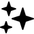
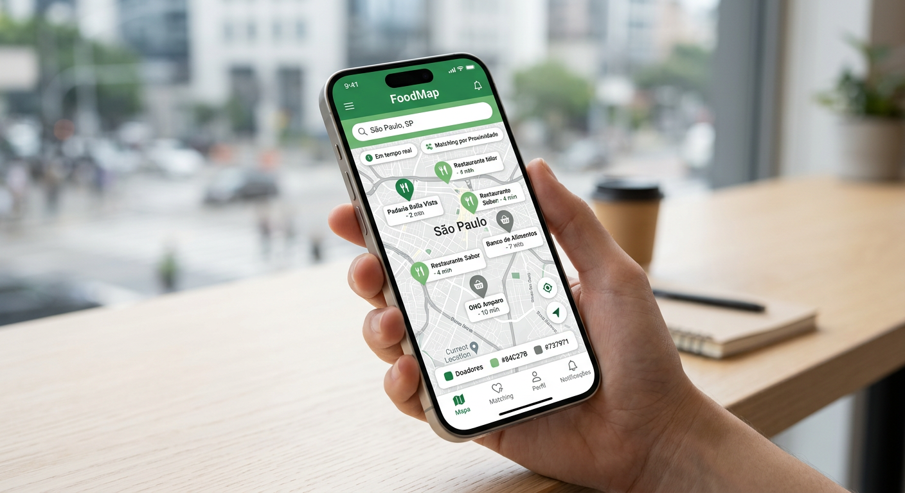
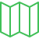

33M Pessoas
em insegurança alimentar grave

Tecnologia para Impacto Social • ODS 2 — Fome Zero
O FoodMap é uma plataforma colaborativa que combate
o desperdício de alimentos e a
insegurança
alimentar em
tempo real, conectando doadores a quem mais precisa.

O Brasil é um dos maiores produtores de alimentos do mundo, contudo, enfrentamos uma crise crônica de insegurança alimentar. O FoodMap nasce da urgência em corrigir uma falha sistêmica: a desconexão logística entre onde sobra alimento próprio para consumo e onde ele é vitalmente necessário.
em insegurança alimentar grave
na cadeia de abastecimento nacional
de matching doador-receptor em tempo real
Um fluxo de trabalho otimizado e seguro, projetado para atender aos rigorosos padrões da indústria alimentícia e das organizações do terceiro setor.

Doadores e receptores visualizam em tempo real um
mapa com pins de pontos de
doação disponíveis próximos. Regiões com maior vulnerabilidade alimentar são destacadas por
cor e severidade.
O sistema calcula automaticamente os doadores mais próximos de cada receptor, considerando tipo de alimento, quantidade disponível, janela de horário e localização. O melhor par é sugerido automaticamente.
Cada doação percorre um ciclo rastreável: Disponível → Em Rota → Entregue. O receptor recebe confirmação do recebimento e o doador tem visibilidade completa do destino do alimento.
A tecnologia apenas facilita; são as pessoas e organizações parceiras que transformam a realidade diária.

Mãe solo, 3 filhos — Receptora
"Antes do FoodMap, eu não sabia onde nem quando aparecia alguma doação perto de casa. Agora acesso o mapa pelo celular e vejo os pontos disponíveis pertinho. Recebi um alerta ontem e busquei alimentos frescos para os meus três filhos. Nunca pensei que um aplicativo pudesse fazer tanta diferença assim."

Dono de Restaurante — Doador
"Pode não parecer, mas fechar o caixa no final do expediente é tão duro quanto o que fazer com a comida que sobrou. Encontrar quem precisava era complicado demais. Com o FoodMap, cadastro o que sobrou, informo o horário e o sistema avisa quem está perto. Simples assim. Parei de desperdiçar e ainda ajudo quem precisa."